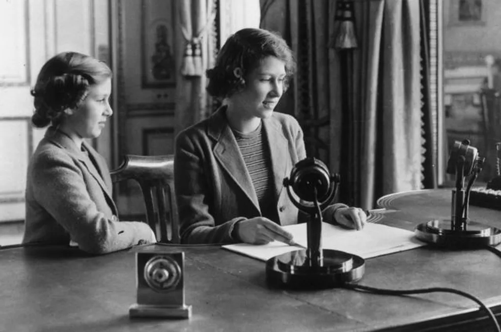
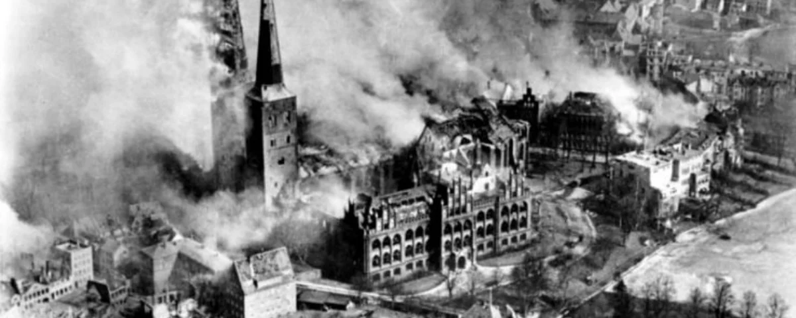
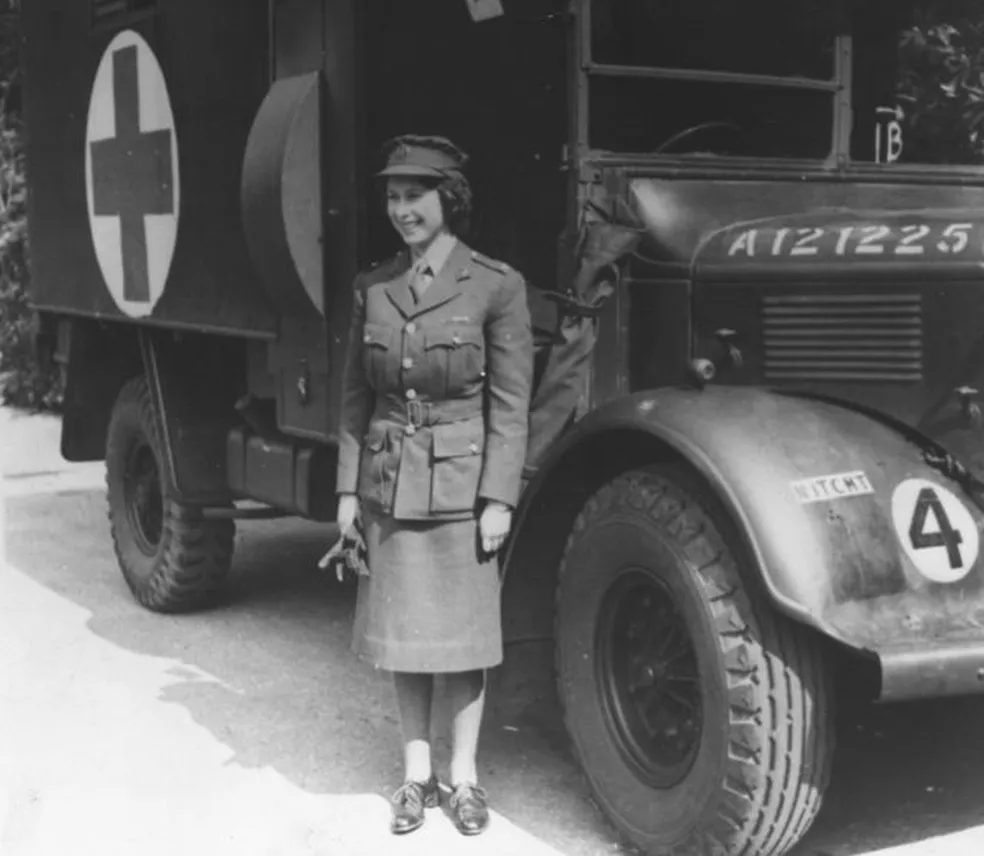
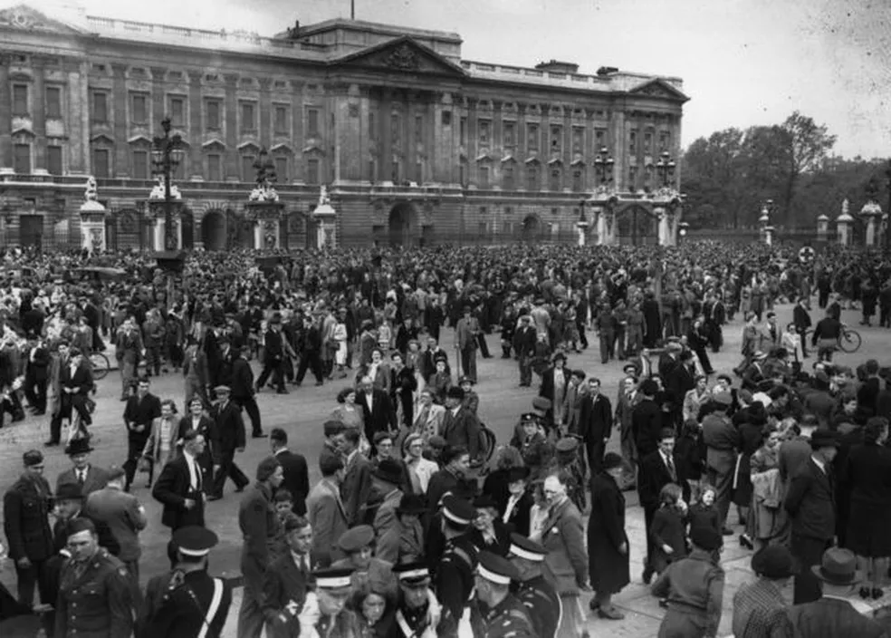

Rainha Elizabeth na Guerra
Assim como para muitos dos seus súditos, o período da Segunda Guerra Mundial foi determinante para o futuro da rainha Elizabeth II.
Ela tinha 13 anos quando o conflito começou e os seis anos de guerra marcariam o início do seu papel público como herdeira do trono britânico.
A família real — o rei, a rainha e as filhas Elizabeth e Margaret — era também um forte símbolo dos valores pelos quais a Grã-Bretanha e seus aliados lutavam contra a ditadura nazista de Adolf Hitler na Alemanha.
Políticos e conselheiros recomendaram que as meninas fossem transferidas para o Canadá, uma ideia que não agradou à rainha-mãe.
"As crianças não sairão a menos que eu saia", afirmou a rainha Elizabeth. "Eu não sairei a não ser que o pai delas o faça, e o rei não deixará o país em nenhuma circunstância."
Em outubro de 1940, quando a Grã-Bretanha sofria a pior onda de bombardeios alemães, Elizabeth fez seu primeiro pronunciamento público transmitido pelo rádio.
Era um discurso dirigido às crianças britânicas que haviam sido enviadas à América do Norte para escapar dos terríveis bombardeios, mas serviu como uma mensagem para ganhar a simpatia do público americano em favor da entrada do país na guerra.
"Estamos tentando fazer tudo o que podemos para ajudar nossos audazes marinheiros, soldados e aviadores. E estamos tentando também suportar nossa própria cota de perigo e tristeza pela guerra", afirmou.
O fato de Elizabeth e Margaret terem permanecido no país foi considerado um importante fator para levantar o moral da nação.
O mais longe do centro dos bombardeios para onde as filhas do rei foram transferidas foi para o Castelo de Windsor. "Fomos para passar um fim de semana e ficamos cinco anos", disseram.
Mas elas estavam perto de Londres o bastante para verem os céus iluminados pelo bombardeio intenso à capital. Em uma ocasião, uma bomba caiu perto do castelo.
As irmãs tinham a companhia dos pais na maioria das noites e nos fins de semana, e os estudos foram mantidos com professores particulares.
Em 1942, a princesa Elizabeth participou do primeiro compromisso público: inspecionou um regimento de infantaria do Exército britânico do qual se tornara coronel-honorária.
Para muitos, o sentido de servir ao país que marcou seu reinado foi forjado a partir dos dramas daqueles anos de guerra.
No último ano do conflito, a própria Elizabeth juntou-se ao Serviço Territorial Auxiliar da Divisão de Mulheres do Exército Britânico.
Ela foi registrada com o número 230873, como segunda subalterna Elizabeth Windsor e passou três semanas com outros recrutas aprendendo mecânica básica e como dirigir um caminhão.
Foi a primeira vez que uma mulher da família real participou de um curso "com outras pessoas".
Poucos meses depois, a guerra terminou. Em maio de 1945, milhares de pessoas se concentraram diante do Palácio de Buckingham para celebrar o Dia da Vitória.
O premiê Winston Churchill se juntou à família real no balcão do palácio e as duas princesas puderam festejar com a multidão nas ruas.
